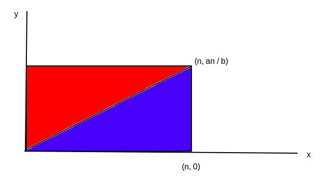
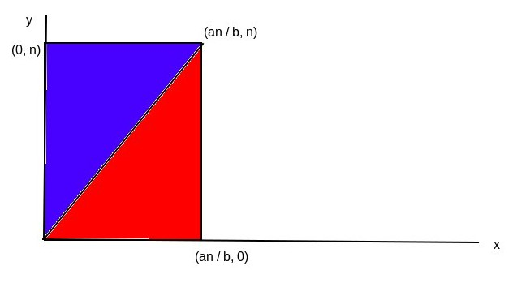

TIOJ-1606
你有一個長度 $n$ 的陣列 $arr$，一開始每項都是 $0$。
接著有 $q$ 筆操作，每筆操作可能是：
$1\ l\ r\ a\ b$：對於所有 $l\le i\le r$，$arr_i := a\times (i - l + 1)\mod b$。
$2\ l\ r$：詢問 $\sum_{i=l}^r arr_i$。
$n\le 10^9, q\le 5\times 10^4, a\le 10^6, b\le 10^6$
這題基本上動態開點會吃 TLE :(
所以先離散化。不難發現這個是個區間修改區間和的問題。
每個節點除了和以外，懶標的部份我們額外維護 $st, a, b$，代表這個節點的和是 $\sum_{i = 1}^{len} (a\times (i+st)\mod b)$，其中 $len$ 代表區間長度。這樣下推時就能很好的把這三個資訊給下推。
因此接下來的問題就是，給定了那三個資訊，有沒有辦法在夠快的時間內知道這個節點的和是多少？
首先令 $S(n)=\sum_{i=0}^n (a\times i\mod b)$，那這個節點的和會是 $S(st+len)-S(st)$，接下來我們把 $S(n)$ 給展開:
$$\begin{align*} S(n) &=\sum_{i=0}^n (a\times i\mod b) \\ &=\sum_{i=0}^n (a\times i - \lfloor \frac{a\times i}{b} \rfloor \times b) \\ &=\sum_{i=0}^n a\times i - \sum_{i=0}^n \lfloor \frac{a\times i}{b} \rfloor \times b \\ &= a\times \frac{n(n+1)}{2} + b\times \sum_{i=0}^n \lfloor \frac{a\times i}{b} \rfloor \end{align*}$$
於是問題就變成了怎麼計算最後那陀除法總和。
注意到如果 $a,b$ 不互質，那可以同除最大公因數來約分讓他們互質，所以我們以下考慮 $a, b$ 互質的情況。
如果 $a\geq b$，那 $\sum_{i=0}^n \lfloor \frac{ai}{b} \rfloor = \lfloor \frac ab \rfloor \times \frac{n(n+1)}{2} + \sum_{i=0}^n \lfloor \frac{(a\mod b)i}{b} \rfloor$，於是問題就變回 $a\lt b$了。
接下來考慮 $a\lt b$ 且 $a\neq 0$，其實 $\sum_{i=0}^n \lfloor \frac{ai}{b} \rfloor$ 可以看成在一個 $(0,0),(n,0),(n,\frac{an}b)$ 的三角形內部（含邊上）有多少個不在 x 軸上的格子點？
也就是下圖的藍色區域有多少格子點。

只不過藍色區域似乎不太好算？
可是整個矩形內部的格子點數量很好算！就是 $n\times \lfloor \frac{an}{b}\rfloor$！
而在對角線上的格子點數量呢？也很好算！因為 $a, b$ 互質，所以只有在 $i$ 是 $b$ 的倍數的時候 $\frac{ai}{b}$ 是整數。因此格子點數量就是 $\frac{n}{b}$。
因此只要我們會算紅色區域的格子點數量，那藍色區域就是（整個矩形）-（紅色區域）+（對角線上的格子點）了！
那要怎麼算紅色區域的格子點數量呢？你試著把頭往右轉 90 度看這張圖，你會發現其實他等同於這樣：

於是紅色區域的格子點數量其實就是當 $a’=b, b’=a, n’=\lfloor \frac{an}{b} \rfloor$ 時的答案了！因為 $a’\gt b’$，所以會先回到第一個 case，並且取 mod 後再回到第二個 case，因為每次取 mod 都會造成 $a$ 或 $b$ 其中一個被砍掉至少一半，所以計算的過程會在 $\mathcal{O}(\log \max(a,b))$ 的時間內跑完！
配上線段樹的 $\mathcal{O}(n\log n)$，整體複雜度 $\mathcal{O}(n\log n\log \max(a, b))$。
實作的部份小心 overflow，不過因為最後輸出的答案會在 long long 範圍內，所以變數型態開 unsigned long long 就能當成在 $\mod 2^{64}$ 的情況下計算了。
1 | /* |